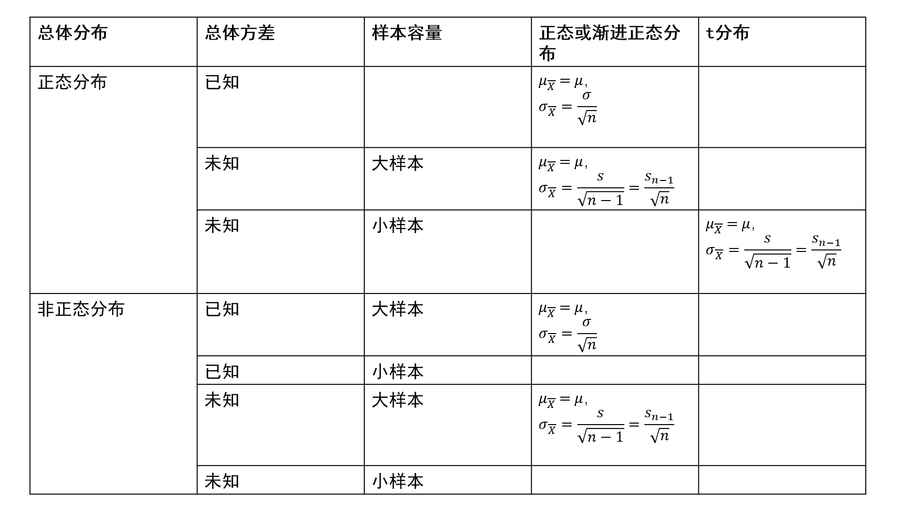
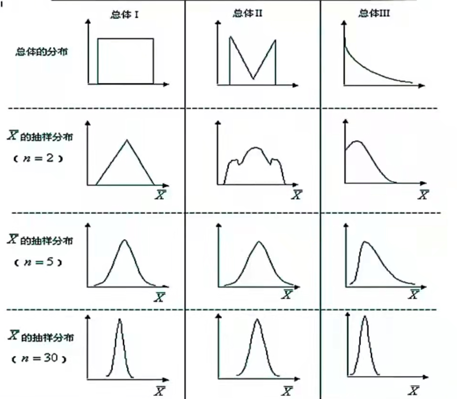
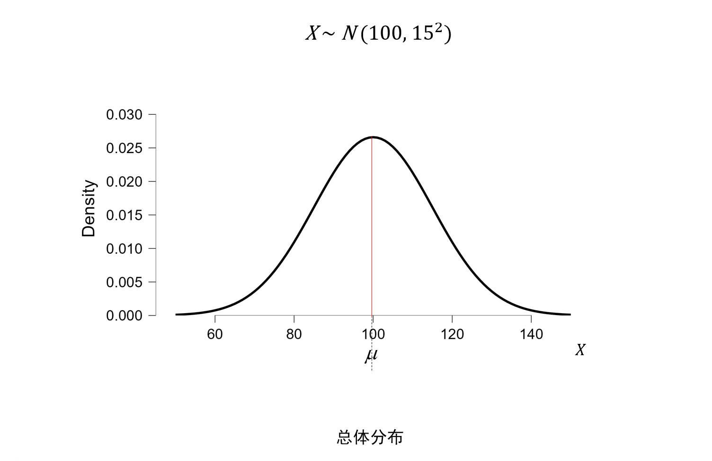
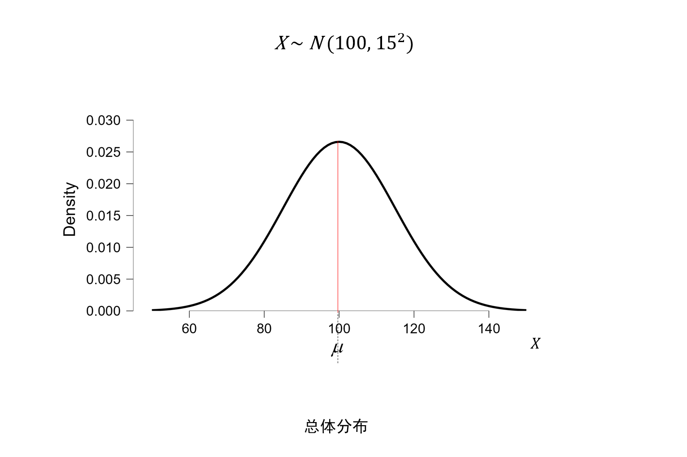
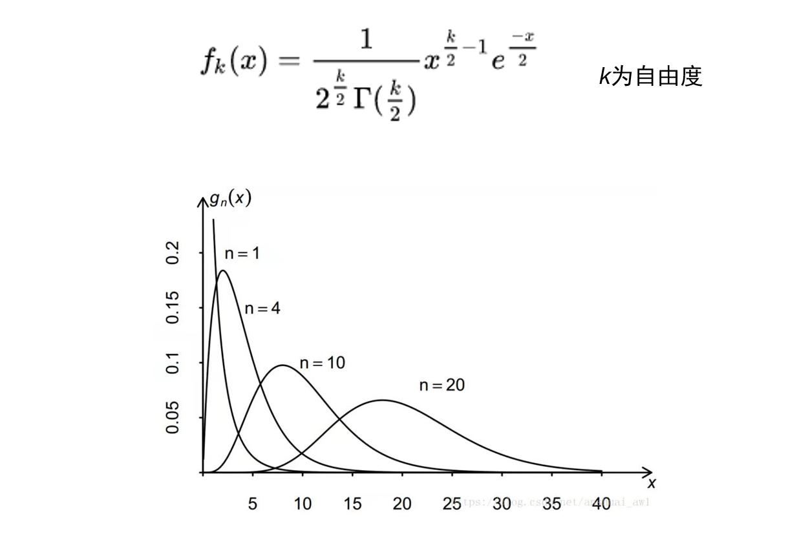
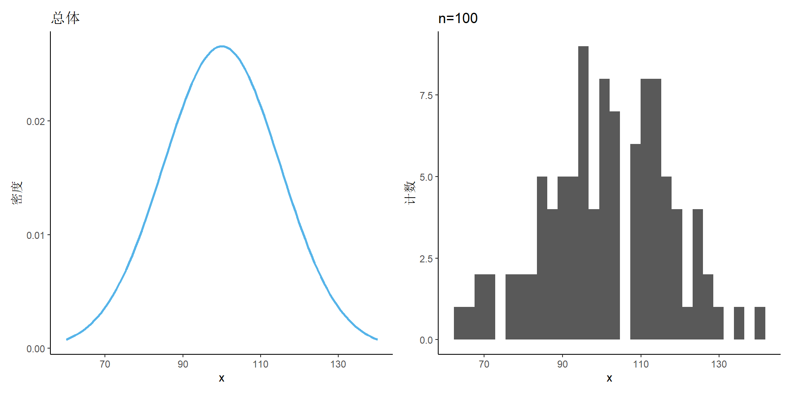
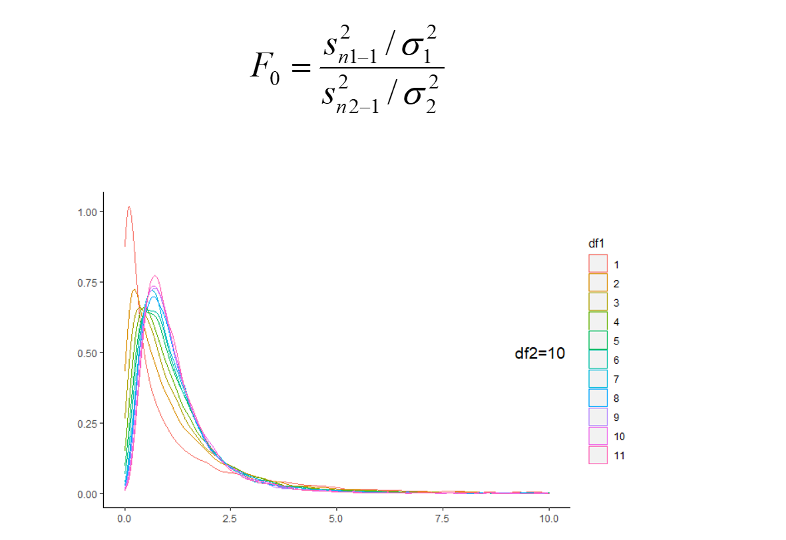
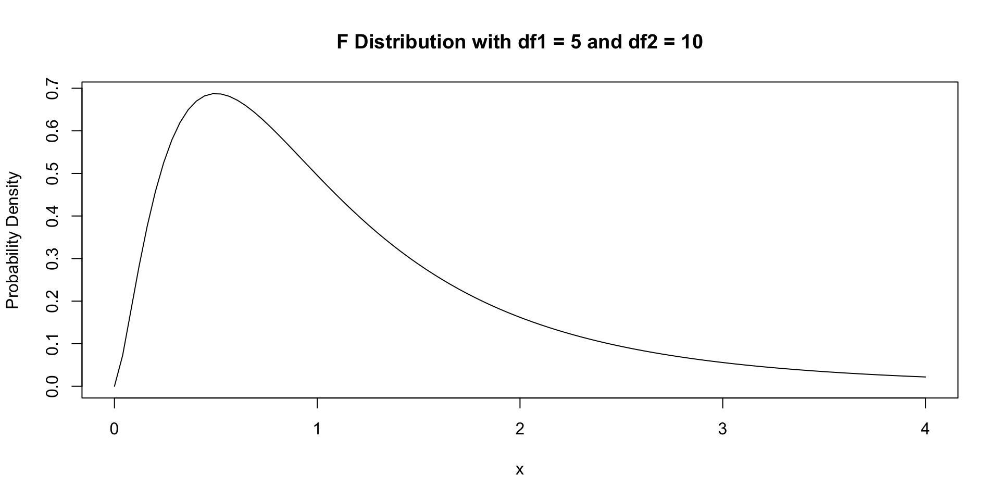

09 - 抽样分布与参数估计(2)
(Sampling Distribution & Parameter Estimation 2)
Hu Chuan-Peng
2023-04-23
回顾(review)
- 抽样分布
- 统计量与参数
- 平均数的抽样分布
- 统计量与参数
- 点估计
- 点估计的特性
- 点估计的局限
- 点估计的特性
- 区间估计
- 置信区间
- 置信度
回顾(review)
- 某研究者对某假定为正态分布的参数\(\mu\)感兴趣并进行了一次实验，估计\(\mu\)的93%置信区间为\([\hat{\mu}_1\),\(\hat{\mu}_2]\)(即置信度为93%)，则以下结论正确的是
- A. 重复一次实验，\(\mu\)落在区间[\(\hat{\mu}_1\), \(\hat{\mu}_2\)] 之内的概率为93%
- B. 重复一次实验，\(\mu\)落在区间[\(\hat{\mu}_1\), \(\hat{\mu}_2\)] 之外的概率为 7%
- C. 无数次重复实验并估计93%的置信区间[\(\hat{\mu}_1\), \(\hat{\mu}_2\)]，有93%的置信区间包含\(\mu\)
- D. 区间(\(\hat{\mu}_1\), \(\hat{\mu}_2\))随着置信度增加而变宽，但与实验样本大小无关
样本平均数的区间估计
区间估计(Interval estimation)
- 区间估计是从点估计值和抽样标准误差出发，以点估计值\(\hat{\theta}\)为基础，按给定的概率值建立可能包含待估计参数的区间，并提供总体参数值\(\theta\)落入该区间内的概率。
区间估计(Interval estimation)
置信区间(confidence interval, CI)
以点估计值\(\hat{\theta}\)为基础建立起来的可能包含待估计参数的区间称为置信区间（confidence interval），而置信区间[\(\hat{\theta}_1\),\(\hat{\theta}_2\)]是指在某一置信水平下，样本统计值与总体参数值间误差范围。
若进行100次抽样，每次样本容量为 n，利用\(1−\alpha\) 构造100个置信区间，则有接近\(100(1-\alpha\))% 个估计的置信区间包含总体参数\(\theta\) ，（即以\(100(1- \alpha\))% 的概率包含\(\theta\) ）。
区间估计(Interval estimation)

区间估计(Interval estimation)
回顾：中心极限定理
中心极值定理
\[\bar{X} =\frac{X_1+X_2+...+X_n}{n} \]
当总体服从正态分布且样本量为大样本的情况下，样本平均数的抽样分布服从正态分布或渐进正态分布
当总体未知且样本量为大样本的情况下，样本平均数的抽样分布服从正态分布或渐进正态分布
当总体服从正态分布且样本量为小样本的情况下，样本平均数的抽样分布服从t分布
当总体未知且样本量为小样本的情况下，样本平均数的抽样分布未知
t分布
t分布
\[f(t)=\frac{\Gamma(\frac{v+1}{2})}{\sqrt{v\pi}\Gamma(\frac{v}{2})}(1+\frac{t^2}{v})^{\frac{-(v+1)}{2}},v为自由度\]

t分布的历史
Guinness 黑啤酿造中如何进行质量控制？
需要使用少量的实验来对大规模的黑啤量产过程。
t分布的历史
戈塞特(William Sealy Gosset), 英国统计学家, 1908年，以匿名方式在《生物学杂志》上发表t分布。
当时，戈塞特是位爱尔兰的麦格希尔啤酒公司的麦芽酒采购员，而该公司禁止员工向外界透露麦芽酒的制作秘密。因此，戈塞特使用了笔名“学生氏”（Student）来发表他的成果。
戈塞特的研究问题涉及到小样本数量下如何从样本中估计总体平均数的方差。他基于正态分布和卡方分布推导出了t分布，并给出了用于估计总体均值的t检验方法。戈塞特的方法对统计学和质量控制等领域产生了深远的影响。
自由度(Degree of freedom, df)
定义一：总体参数估计量中变量值独立自由变化的个数。
定义二：自由度是样本容量n减去独立限制因素的个数。
定义三：将容量为n的样本的n个随机变量构造成一个随机向量，那么这个向量可以看成是n维空间的一个点，每有一个独立约束条件，则向量的自由维度减1。( Fisher, R )
若存在两个变量 a,b,且条件是a+b=1,此时其中一个数 a 已知,另一个数 (b = 1 - a)会依赖 a 的值变化而变化，则这组数的自由度df 为1。
自由度(Degree of freedom, df)
估计总体的方差\(\sigma^2\)时所使用的统计量是样本的方差，须用到样本平均数\(\bar{X}\)来计算。
在抽样完成后，大小为n的样本中只要n-1个数确定了，第n个数的值就只有一个取值，能使样本满足均值为\(\bar{X}\)。即样本中只有n-1个数可以自由变化，只要确定了这n-1个数，方差也就确定了。
平均数\(\bar{X}\)就相当于一个限制条件，由于加了这个限制条件，样本方差的自由度为n-1。
\[n=6\]
t分布
当数据遵循钟形曲线并且总体方差未知时，数据的分布为t分布
t分布的方差基于数据的自由度
t分数
\(t(df)\)
t分数等于偏离t分布的平均值的标准差的数量
\[t = \frac{\bar{X}-\mu}{s_{\bar{X}}} = \frac{\bar{X}-\mu}{\frac{s}{\sqrt{n}}} \] \[df = n-1\]
\[n=45\]
\[f(t)=\frac{\Gamma(\frac{v+1}{2})}{\sqrt{v\pi}\Gamma(\frac{v}{2})}(1+\frac{t^2}{v})^{\frac{-(v+1)}{2}}\]
t分布 vs 正态分布
共同点
t分布有平滑的形状
t分布是对称的。如果沿着平均值折叠，每一边都是相同的
t分布均值为0
t分布 vs 正态分布
不同点
t分布受样本大小的影响
随着样本容量增加，t分布逐渐接近正态分布
正态分布假定一致总体方差已知
t分布可用于小样本和总体方差未知的情况

总体平均数的区间估计

总体正态分布，总体方差已知
总体正态且总体方差已知时的区间估计
样本统计量的标准误\(SE = \frac{\sigma}{\sqrt{n}}\)

总体正态分布，总体方差已知
总体正态且总体方差已知时的区间估计
样本统计量的标准误\(SE = \frac{\sigma}{\sqrt{n}}\)
\[Z = \frac{\bar{X}-\mu}{\frac{\sigma}{\sqrt{n}}}\]
\[P(\bar{X}-Z_{\frac{\alpha}{2}}\frac{\sigma}{\sqrt{n}}<\mu<\bar{X}+Z_{\frac{\alpha}{2}}\frac{\sigma}{\sqrt{n}})=1-\alpha\]
总体正态分布，总体方差未知
样本量足够大
用样本标准差\(S_{n-1}\)作为总体参数\(\sigma\)的估计值
标准误\(SE = \frac{s_{n-1}}{\sqrt{n}}\)
\[P(\bar{X}-Z_{\frac{\alpha}{2}}\frac{s_{n-1}}{\sqrt{n}}<\mu<\bar{X}+Z_{\frac{\alpha}{2}}\frac{s_{n-1}}{\sqrt{n}})=1-\alpha\]
总体非正态分布，总体方差已知
样本量足够大
用样本统计量的标准误\(SE = \frac{\sigma}{\sqrt{n}}\)
\[P(\bar{X}-Z_{\frac{\alpha}{2}}\frac{\sigma}{\sqrt{n}}<\mu<\bar{X}+Z_{\frac{\alpha}{2}}\frac{\sigma}{\sqrt{n}})=1-\alpha\]
总体非正态分布，总体方差未知
样本量足够大
用样本标准差\(S_{n-1}\)作为总体参数\(\sigma\)的估计值
标准误\(SE = \frac{s_{n-1}}{\sqrt{n}}\)
\[P(\bar{X}-Z_{\frac{\alpha}{2}}\frac{s_{n-1}}{\sqrt{n}}<\mu<\bar{X}+Z_{\frac{\alpha}{2}}\frac{s_{n-1}}{\sqrt{n}})=1-\alpha\]
总体正态分布，总体方差未知
小样本
用样本标准差\(s_{n-1}\)作为总体参数\(\sigma\)的估计值
标准误\(SE = \frac{s_{n-1}}{\sqrt{n}}\)
\[P(\bar{X}-t_{\frac{\alpha}{2}}\frac{s_{n-1}}{\sqrt{n}}<\mu<\bar{X}+t_{\frac{\alpha}{2}}\frac{s_{n-1}}{\sqrt{n}})=1-\alpha\]
从某小学三年级随机抽取12名学生，其阅读能力得分为28，32，36，22，34，30，33，25，31，33，29，26。
假定小学三年级学生的阅读能力是正态分布，试估计该校三年级学生阅读能力总体平均数95％和99％的置信区间。
样本标准差和方差的抽样分布？
样本标准差的抽样分布
方差的抽样分布
当样本量足够大时，样本标准差和方差的抽样分布为正态分布或渐进正态分布

当样本量较小时，样本标准差和方差的抽样分布不服从正态分布或渐进正态分布
当样本量较小时，样本标准差和方差的抽样分布不服从正态分布或渐进正态分布
对于这种非正态分布，我们该如何处理呢？
卡方分布
卡方分布
总体正态\(X \sim N(\mu,\sigma^2)\)
\(Z = \frac{X_i-\mu}{\sigma}\)
\(Z \sim N(0,1)\)
\(\sum^{n}_{i=1}Z^2 \sim \chi^2(n)\)
即\(\sum^{n}_{i=1}(\frac{X_i-\mu}{\sigma})^2 \sim \chi^2(n)\)
n为自由度
卡方分布的特点
\(\chi^2\)值都是正值
\(\chi^2\)分布呈正偏态，右端无限延伸，但不与基线相交
\(\chi^2\)分布随自由度变化形成一族分布，自由度越小，越偏斜；自由度越大，分布形态趋于对称，自由度趋于无穷大时，呈正态分布
\(\chi^2\)的可加性：几个相互独立的\(\chi^2\)变量的和仍服从\(\chi^2\)分布
调节不同参数，绘制不同的卡方分布，观察其形态变化
F分布
- 设随机变量\(X \sim \chi_m^2,Y \sim \chi_n^2\),且X与Y独立，则称
\(F = \frac{\frac{X}{m}}{\frac{Y}{n}}\) 为自由度分别是 m 和 n 的F 变量，其分布称为 m 和 n 的F 分布，记为\(F \sim F_{m,n}\)
\(\frac{(n-1)s^2}{\sigma^2} \sim \chi^2(n-1)\)
\(\frac{\frac{s_1^2}{\sigma_1^2}}{\frac{s_2^2}{\sigma_2^2}} \sim F(n_1-1,n_2-1)\)
F分布的特点
非对称分布
F 分布有两个参数，对应的是两个自由度。
总体均值\(E(F) = \frac{n_2}{n_2-2},其中n_2>2\)
方差\(D(F) = \frac{2n_2^2(n_1+n_2-2)}{n_1(n_2-2)^2(n_2-4)},其中n_2>4\)
\(X \sim F(n_1,n_2), \frac{1}{X} \sim F(n_2, n_1)\)
\(X \sim t(n), X^2 \sim F(1,n)\)
调节不同参数，绘制不同的F分布，观察其形态变化
总结
样本平均数的抽样分布
- t分布
- t分布
样本方差和标准差的抽样分布
\(\chi^2\)分布
F分布
区间估计的基本步骤
总体平均数
总体方差
两总体方差之比
两总体均值之差